Gestión de contenido multimedia mediante inserción masiva y análisis estadístico de temporadas y años de estreno.
INSERT INTO serie_netflix (nombre, temporadas, genero, anio_estreno) VALUES
('Black Mirror', 5, 'Ciencia ficción', 2011);Carga inicial de datos.
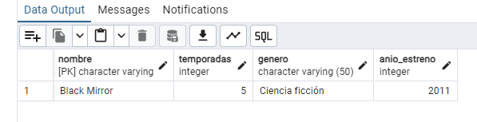
INSERT INTO serie_netflix (nombre, temporadas, genero, anio_estreno) VALUES
('The Bear', 2, 'Drama', 2022),
('The Mandalorian', 3, 'Ciencia ficción', 2007),
('Ted Lasso', 3, 'Comedia', 2020),
('Severance', 1, 'Ciencia ficción', 2022),
('The White Lotus', 2, 'Sátira', 2021),
('Yellowstone', 5, 'Drama', 2008),
('Euphoria', 2, 'Drama', 2009),
('Lupin', 3, 'Crimen', 2021),
('Beef', 7, 'Comedia Drama', 2023);Insertar datos para poblar el catálogo con diversidad de géneros y años.
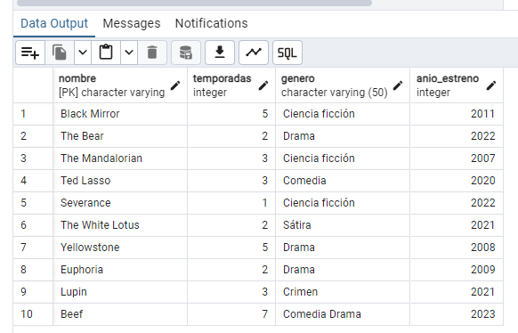
SELECT * FROM serie_netflix
WHERE temporadas > 3
ORDER BY anio_estreno DESC;Filtrado de contenido extenso ordenado cronológicamente de forma descendente.
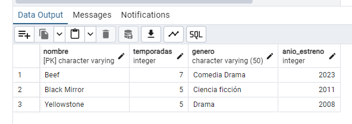
SELECT MIN(anio_estreno) AS anio_antiguo
FROM serie_netflix;Uso de la función de agregación MIN para localizar el origen del catálogo.
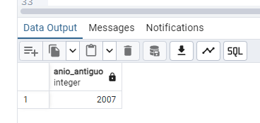
SELECT MAX(anio_estreno) AS anio_new
FROM serie_netflix;Uso de MAX para determinar el estreno más reciente en la base de datos.
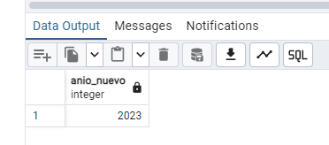
SELECT ROUND(AVG(anio_estreno)) AS anio_promedio
FROM serie_netflix;Cálculo del promedio central de estrenos aplicando redondeo para obtener un año entero.
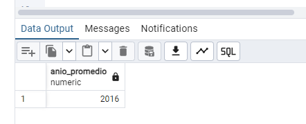
SELECT ROUND(AVG(temporadas))
AS temporada_promedio FROM serie_netflix;Cálculo de la media de duración de las series en el catálogo.
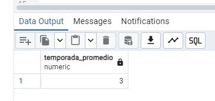
SELECT * FROM serie_netflix
WHERE temporadas IN (1, 2, 4, 5, 7)
ORDER BY temporadas ASC;Filtrado por conjunto de valores específicos usando el operador IN.
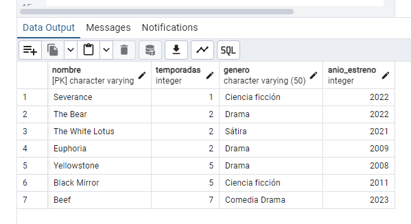
SELECT * FROM serie_netflix
WHERE temporadas NOT IN (1, 2, 4, 5, 7)
ORDER BY temporadas ASC;Exclusión de grupos de datos específicos mediante NOT IN.
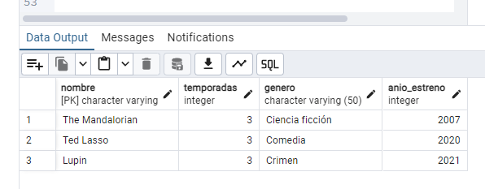
DELETE FROM serie_netflix WHERE anio_estreno > 2010;Ejecución de sentencia DELETE con filtro condicional de año.
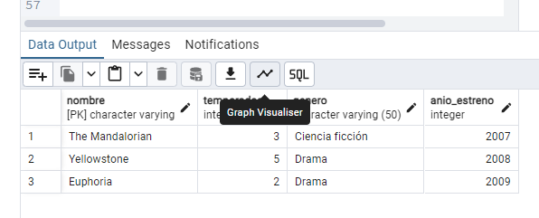
INSERT INTO serie_netflix (nombre, temporadas, genero, anio_estreno) VALUES
('Black Mirror', 5, 'Ciencia ficción', 2011),
('The Bear', 2, 'Drama', 2022),
('Ted Lasso', 3, 'Comedia', 2020),
('Severance', 1, 'Ciencia ficción', 2022),
('The White Lotus', 2, 'Sátira', 2021),
('Lupin', 3, 'Crimen', 2021),
('Beef', 7, 'Comedia Drama', 2023);Restauración de registros tras limpieza de tabla.
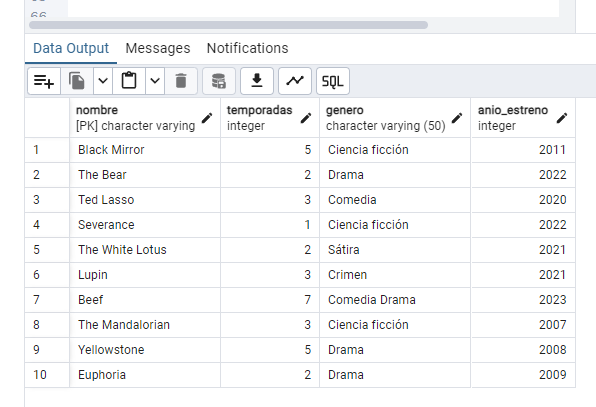
INSERT INTO serie_netflix (nombre, temporadas, genero, anio_estreno)
VALUES ('Doctor House', 8, 'Drama Médico', 2004);Adición de un registro individual al catálogo existente.
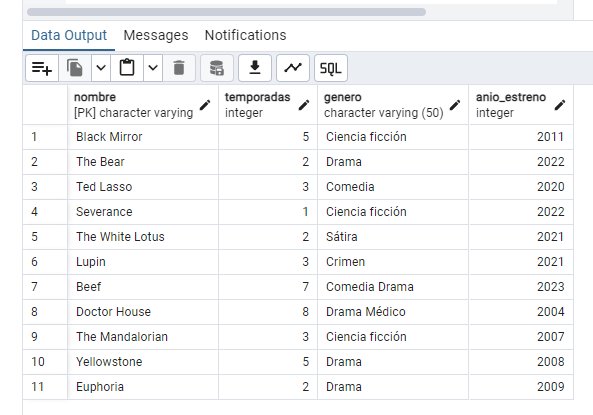
SELECT * FROM serie_netflix
WHERE anio_estreno BETWEEN 2005 AND 2020
ORDER BY anio_estreno ASC;Uso del operador de rango BETWEEN para segmentación temporal.
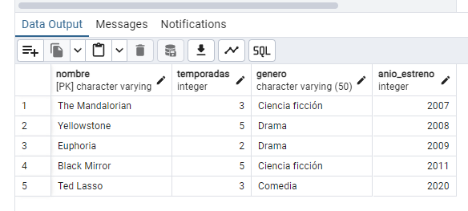
SELECT * FROM serie_netflix
WHERE nombre LIKE 'b%' OR nombre LIKE '%e'Búsqueda de patrones mediante LIKE para nombres que inician con 'b' o terminan con 'e'.
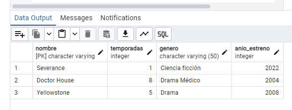
SELECT nombre, (anio_estreno + temporadas) AS calculo
FROM serie_netflix WHERE (anio_estreno + temporadas) > 2010;Operación aritmética entre columnas para generar una métrica combinada superior a 2010.
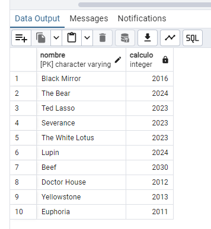
Análisis Concluido:
Se ha procesado exitosamente el catálogo multimedia, validando la integridad de los datos tras operaciones de borrado y reinserción. Las consultas confirman un ecosistema de contenido diverso con predominancia en dramas y ciencia ficción.
Volumen de Series
Promedio de Vida
Rango de Estrenos
Formato: .sql (Plain Text) | PostgreSQL 18.3 compatible